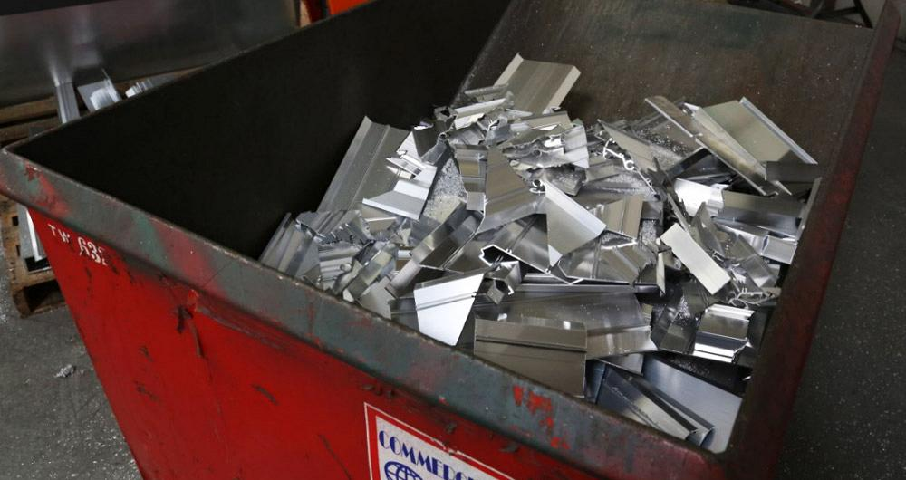

Preamble
While the entire world is totally captured by Stable Diffusion, I’m experimenting randomly into the forest of Random Forest. Here my 2 cents after about 60+ hours of fighting against Random Forest. Actually Forrest is winning the game.
Why Predicting Scraps Boxes Weight?
It’s hard to fight entropy in my home.
It’s exponentially hard to fight entropy in a plant, in an Aluminium plant precisely.
The factory would gain lots of benefits when scraps are segregated, weighted and labeled in the right way1. Better the process and higher the impact on the revenue of the company (true story).
The weighting process is simple: take the box, put it on an industrial scale, get the weight and repeat.
The weighting process, although heavily based on an inductive flow, it’s not enough. The operators have still room of errors. How can I solve this problem, without spending lot’s of money? Wrong answers only: Random Forest is the answer.
I concluded that scraps box belongs to a specific set of weights: from 0 (no box) up to 1010 KG. Simply a set of 10 boxes. It brings to a problem to solve: classification problem.
Structured data + classification problem = RandomForestClassifier.

First Round
| Model | Dataset |
|---|---|
| Random Forest Classifier | CSV file, 82k rows and 33 columns. |
The dataset has been created by joying most interesting tables, adding intentionally duplicated or closely correlated columns. May increase the noise or may drive to a better prediction?
Preprocessing
Since I already worked with this data, I found a subtle feature, which is a calculated field where would create lots of troubles in production environment. net_weight is accused of Data Leakage23 so I firstly dropped it.
Obviously, Data Leakage is an issue faced later on experimentation but, IMHO, earlier you find and better it is. It’s mean you have a good understanding of data.
Via Categorify, FillMissing, cont_cat_split and RandomSplitter functions, the data is ready to be fitted.
from fastai.tabular.all import Categorify, FillMissing, cont_cat_split, RandomSplitter
dep = "tare_weight"
df = df.drop("net_weight", axis=1)
procs = [Categorify, FillMissing]cont,cat = cont_cat_split(df, 1, dep_var=dep)splits = RandomSplitter(valid_pct=0.25, seed=42)(df)I think cont_cat_split is a nice function to spend few seconds with. Going to its source code, I can see how genuinely the continuous and categorical variables are managed:
def cont_cat_split(df, max_card=20, dep_var=None):
"Helper function that returns column names of cont and cat variables from given `df`."
cont_names, cat_names = [], []
for label in df:
if label in L(dep_var): continue
if ((pd.api.types.is_integer_dtype(df[label].dtype) and
df[label].unique().shape[0] > max_card) or
pd.api.types.is_float_dtype(df[label].dtype)):
cont_names.append(label)
else: cat_names.append(label)
return cont_names, cat_namesFor every column in dataframe, if it has more then 20 elements or it’s a float, appends to continuous, otherwise categorical. I’ve no experience with FastAI API, but I suppose the library is full of such elegant and simple way to manage complex data and task.
Once pre-processing step is completed, the dataframe is wrapped into a TabularPandas. TabularPandas is an object. It’s a simple DataFrame wrapper with transforms. Transforms are functions which organize the data in an optimal format.
Machine learning models are only as good as the data that is used to train them.
Better data format, better generalization.
from fastai.tabular.all import TabularPandas
to = TabularPandas(
df, procs, cat, cont,
y_names=dep, splits=splits)to.train.xs.iloc[:3]
Now, save and train.
from fastai.tabular.all import save_pickle
save_pickle('to.pkl',to)Fitting
Jeremy has developed a function which wraps RandomForestClassifier. It turns useful later to apply some tuning.
from fastai.tabular.all import load_pickle
load_pickle('to.pkl', to)from sklearn.ensemble import RandomForestClassifier
def rf(xs, y, n_estimators=100,
max_features=0.5, min_samples_leaf=5, **kwargs):
return RandomForestClassifier(n_jobs=-1, n_estimators=n_estimators,
max_features=max_features,
min_samples_leaf=min_samples_leaf, oob_score=True).fit(xs, y)m = rf(xs, y)A good error metrics, to understand what’s going on, is a simple mean_absolute_error:
from sklearn.metrics import mean_absolute_error
mean_absolute_error(m.predict(xs), y), mean_absolute_error(m.predict(valid_xs), valid_y)
What’s mean_absolute_error? Going to the source code of scikit-learn, I found line which calculate MAE:
np.average(np.abs(y_pred - y_true), weights=sample_weight, axis=0)It means: 1. calculate the delta between (y_pred - y_true) 2. take the absolute value np.abs of the whole rows axis=0 3. finally calculate the average with np.average function
Nothing to add, simple enough.
Out Of Bag Error
In addition to mean_absolute_errors, I have to keep an eye on oob_score_ attribute which returns the accuracy of predictions on the residual rows scrapped during the training. Obviously higher the score better the generalization on validation set.
m.oob_score_
There’s so much resources where explain acutely and precisely what the hell OOB is. I’m not the right person to do that. To simplify the definition I’ve impressed in my mind the following raccomandation by Jeremy: > My intuition for this is that, since every tree was trained with a different randomly selected subset of rows, out-of-bag error is a little like imagining that every tree therefore also has its own validation set. That validation set is simply the rows that were not selected for that tree’s training.
Intermediate Result
| Round | OOB Score | MAE Training set | MAE Validation set |
|---|---|---|---|
| 1 | 0.709 |
47.06 |
73.49 |
47.06 and 73.49 are just numbers. But what does it mean? I have achieved, via a simple RandomForestClassifier with 100 trees (n_estimators), an average of: - 47.06 KG of error on training set - 73.49 KG of error on validation set
And an accuracy of 0.709 on the residual data not included in the fitting step.
It’s clear there are multiple goals to try to achieve. A good trade off could be the following chain: small_enough_error > stability > maintainability
The next steps I’m going to walk, aims to improve the above chain.
Second Round
RandomForest is composed by multiples DecisionTrees. DecisionTrees are highly interpretable, so it’s time to investigate the data: 1. analyzing the most important columns, AKA feature_importances_ 2. analyzing the prediction behavior for each row, AKA treeinterpreter 3. finding redundant columns, AKA cluster_columns 4. analyzing prediction confidence of the model, AKA std of each tree prediction 5. analyzing the relationship between independent variables and dependent variable, AKA partial_dependece 6. finding out of domain data, AKA extrapolation problem 7. analyzing where most wrong predictions go, AKA confusion_matrix
Feature Importances
def rf_feat_importance(m, df):
return pd.DataFrame({'cols':df.columns, 'imp':m.feature_importances_}
).sort_values('imp', ascending=False)fi = rf_feat_importance(m, xs)
fi[:5]
According to the above table: - the box weight prediction is mainly influenced by weight itself4. Sounds reasonable; - id_machine, in other words the machine which generates scraps, is the second most important indicator of box weight prediction. Sounds reasonable as well; - id_machine_article_description is the combination between id_machine, article and description_machine, where article is the thickness range of scarps (Ex.: from 0.5mm to 0.25mm); - percentage of id and timestamp is too similar. Maybe, periodically, I can expect a specific type of scraps? - code_machine is the short name of machine; - last_name, the operator, contributes to the box weight prediction as well. Maybe some operators are more diligent then others? - description_machine is extended name of machine;
Everything sounds reasonable so it seems I’ve discovered nothing so useful.
Let’s visualize feature_importances_ columns.
def plot_fi(fi):
return fi.plot('cols', 'imp', 'barh', figsize=(12,7), legend=False)
plot_fi(fi[:30]);
Now let’s remove from training and validation sets features which tend to 0 .
fi = fi[fi["imp"] < 0.002]
filtered_xs = xs.drop(fi["cols"], axis=1)
filtered_valid_xs = valid_xs.drop(fi["cols"], axis=1)Then fitting again the model and check the error rate (mean_absolute_error and oob_score_).
m = rf(filtered_xs, y)mean_absolute_error(m.predict(filtered_xs), y), mean_absolute_error(m.predict(filtered_valid_xs), valid_y)
m.oob_score_
Has been achieved few improvements: - mean_absolute_error on training set is smaller: from 47.06 to 46.78; - mean_absolute_error on validation set is smaller: from 73.49 to 73.47; - oob_score_ stable: from 0.709 to 0.708 - features reduced: from 33 to 25.
Now, let’s hunt redundant features.
Redundant Features
# https://stackoverflow.com/questions/17778394/list-highest-correlation-pairs-from-a-large-correlation-matrix-in-pandas
def corr_filter(x: pd.DataFrame, bound: float):
corr = x.corr()
x_filtered = corr[((corr >= bound) | (corr <= -bound)) & (corr !=1.000)]
x_flattened = x_flattened.unstack().sort_values().drop_duplicates()
return x_flattened
corr_filter(filtered_xs, .8) Giving a threshold of
Giving a threshold of 0.8, function will return set of elements highly correlated with a score from 0.8 to 0.9999.
For a better understanding, worth to visualize them.
# https://stackoverflow.com/questions/17778394/list-highest-correlation-pairs-from-a-large-correlation-matrix-in-pandas
import matplotlib.pyplot as plt
import seaborn as sn
xs_corr = filtered_xs.corr()
compressed_xs = xs_corr[((xs_corr >= .5) | (xs_corr <= -.5)) & (xs_corr !=1.000)]
plt.figure(figsize=(30,10))
sn.heatmap(compressed_xs, annot=True, cmap="Reds")
plt.show()
An alternative to heatmap is the helper function cluster_columns which implement a dendrogram chart.
# https://github.com/fastai/fastbook/blob/master/09_tabular.ipynb
from scipy.cluster import hierarchy as hc
def cluster_columns(df, figsize=(10,6), font_size=12):
corr = np.round(scipy.stats.spearmanr(df).correlation, 4)
corr_condensed = hc.distance.squareform(1-corr)
z = hc.linkage(corr, method='average')
fig = plt.figure(figsize=figsize)
hc.dendrogram(z, labels=df.columns, orientation='left', leaf_font_size=font_size)
plt.show()Now, iteratively remove every closely correlated feature and calculate oob_score_. This task is performed by get_oob function:
def get_oob(df):
m = RandomForestClassifier(n_estimators=40, min_samples_leaf=15,
max_samples=50000, max_features=0.5, n_jobs=-1, oob_score=True)
m.fit(df, y)
return m.oob_score_get_oob(filtered_xs)
to_drop = ["id", "timestamp", "slim_alloy", "id_alloy", "pairing_alloy",
"international_alloy", "id_user", "address",
"location_name", "article_min_tickness", "article_max_tickness_na"]{c:get_oob(filtered_xs.drop(c, axis=1)) for c in to_drop}
Going to remove only features with higher score.
to_drop = ["timestamp", "id_alloy", "id_user", "address", "article_min_tickness"]
filtered_xs = filtered_xs.drop(to_drop, axis=1)
filtered_valid_xs = filtered_valid_xs.drop(to_drop, axis=1)m = rf(filtered_xs, y)mean_absolute_error(m.predict(filtered_xs), y),
mean_absolute_error(m.predict(filtered_valid_xs), valid_y)
m.oob_score_
Intermediate Result
| Round | OOB Score | MAE Training set | MAE Validation set |
|---|---|---|---|
| 1 | 0.709 |
47.06 |
73.49 |
| 2 | 0.708 |
49.37 |
74.09 |
Not much worse than the model with all the fields. I’ve reduced some more columns (from 25 to 20) and kept stable oob_score_. Removing redundant features help to prevent overfitting.
Third Round
As showed by Jeremy, Random Forest can suffer of Extrapolation problem (:open_mouth:). 
It means, in this case, predictions are too low with new data.
Remember, a random forest just averages the predictions of a number of trees. And a tree simply predicts the average value of the rows in a leaf. Therefore, a tree and a random forest can never predict values outside of the range of the training data. This is particularly problematic for data where there is a trend over time, such as inflation, and you wish to make predictions for a future time. Your predictions will be systematically too low.
For this reason I’ve to make sure validation set does not contain out-of-domain data.
Out-of-Domain Data
How to understand if the data is distributed quite properly on training set and validation set?
df_dom = pd.concat([filtered_xs, filtered_valid_xs])
is_valid = np.array([0]*len(filtered_xs) + [1]*len(filtered_valid_xs))
m = rf(df_dom, is_valid)
rf_feat_importance(m, df_dom)[:15]
Now, for each feature which vary a lot from training set and validation set, try to drop and check mean_absolute_error. Finally, select those that keep improving the model.
print('orig', mean_absolute_error(m.predict(filtered_valid_xs), valid_y))
for c in ('id','weight', 'international_alloy', 'slim_alloy',
'pairing_alloy', 'id_machine_article_description', 'location_name', "last_name"):
m = rf(filtered_xs.drop(c,axis=1), y)
print(c, mean_absolute_error(m.predict(filtered_valid_xs.drop(c,axis=1)), valid_y))
Let’s drop only slim_alloy.
to_drop = ['slim_alloy']
xs_final = filtered_xs.drop(to_drop, axis=1)
valid_xs = filtered_valid_xs.drop(to_drop, axis=1)
m = rf(xs_final, y)
mean_absolute_error(m.predict(valid_xs), valid_y)
Keep checking out of bag error:
m.oob_score_
Intermediate Result
| Round | OOB Score | MAE Training set | MAE Validation set |
|---|---|---|---|
| 1 | 0.709 |
47.06 |
73.49 |
| 2 | 0.708 |
49.37 |
74.09 |
| 3 | 0.707 |
73.98 |
Good news, working on out-of-domain data has improved mean_absolute_error and stabilize oob_score_: - from 74.09 KG to 73.98 KG, validation set; - from 0.708 to 0.707, oob_score_.
What I have achieved so far are only small improvements. Looking at a simple chart which plots the delta between real value and prediction, I can see there’s still lot of room of improvement. 
Some datapoints are consistently predicted wrong (dots at about -900/-1000 and about 900/1000). Other visual tools like Confusion matrix , prediction confidence, treeinterpreter can help to analyze those behaviors.
Final Round
Before any hyper-mega-super-giga tuning, my last attempt is to remove older data.
Why? The application which manages the weighting/labeling process of scraps5 has been released about 2 years ago. Wouldn’t surprise me if I found some strange data points, especially during first period of usage where operators were not comfortable yet with the system.
Re-processing whole steps removing older 12k datapoints, seems to have generated a better baseline. 
There’s still miss-classification at around -900/-1000 and 900/1000, it’s worth investigating. However it’s evident has been achieved an improvement.
Result
| Round | OOB Score | MAE Training set | MAE Validation set |
|---|---|---|---|
| 1 | 0.709 |
47.06 |
73.49 |
| 2 | 0.708 |
49.37 |
74.09 |
| 3 | 0.707 |
73.98 |
|
| 4 | 0.714 |
72.17 |
I think as baseline model is good entry level: fast to fit, easily interpretable and quite stable.
What I want to point out is that this small experimentation has been possible with few KBs of data, a laptop and a mediocre baseline model. An empowered model version, will avoid to spend several thousand dollars on revamping of machines!
What’s Next?
Once created a baseline model on simplified dataset, it’s time to make a decision: - creating a NN model - or working on Radom Forest tuning - or switching to XGBoost model
…roughly 80% of consequences come from 20% of causes…
As per Pareto principle, it means, for me, to try to leverage and get as good result as soon as possible while keeping at the minimum the effort.
So next steps: - I will implement a Neural Network model - then I’ll combine NN with Random Forest - the ensembles will work in parallel with a Computer Vision model which will try to classify the same problem (a box of scraps).
All those stuffs are aimed to develop a system where departments are notified every time the prediction of models are too different from what’s happening during the weighting process.
I’ve in mind already the application name: Box ClassifAI.
Keep the scraps errors lower and push higher the revenue. That’s it.
Open Points
- What happens if I play with categorical and continuous variables? Can them affect the prediction?
- Plotting
dendogramand removing most correlated columns. Does it change the prediction? Are columns the same? - Why is confidence of prediction totally wrong when the deviation reach value
100? Why is prediction not so bad with greater value? - Partial dependency plots for multi-class-classifiers?
- Could improve Random Forest model with additional information like weather data?
- What’s happen if I convert the problem into a regression one? May the result improve?
If you have any suggestions, recommendations, or corrections please reach out to me.
Footnotes
We have developed some tools to speed up and managing the process of the Aluminium scarps weighting↩︎
A gentle introduction to Data Leakage can be found on Kaggle course↩︎
A formal introduction to Data Leakage can be found on Leakage in Data Mining paper↩︎
Weight - Box Weight = Net Weight↩︎
We have developed some tools to speed up and managing the process of the Aluminium scarps weighting↩︎